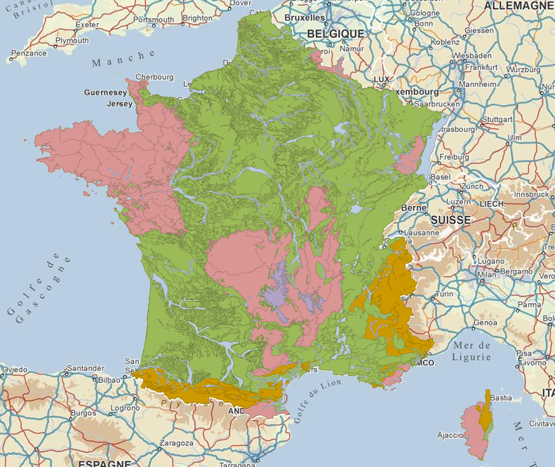
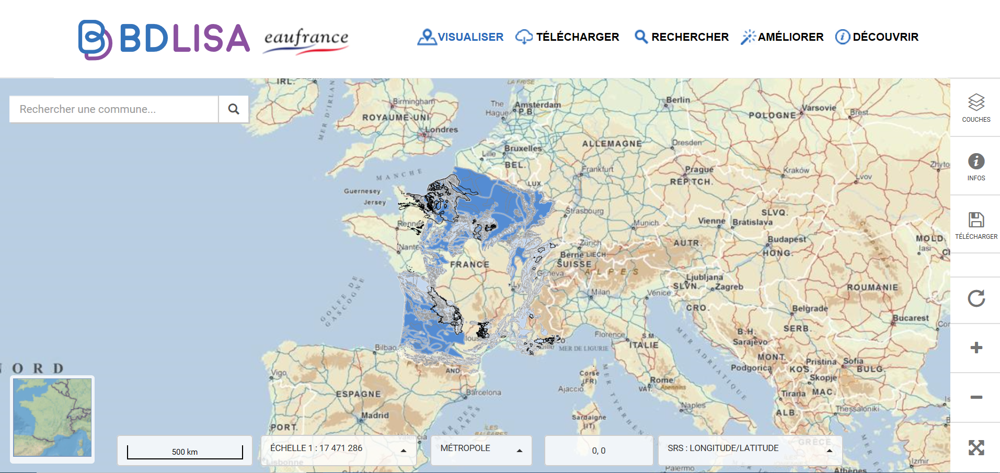

  <div class="row">
    <div class="col-lg-10 col-md-10 mx-auto">
        <h2>Êtes vous sur une partie de la France en rouge ou en brun ci dessous?</h2>
        <p>Si oui: entre 10 et 20% de ce territoire apparaîtra en noir <a class="lien" href="/">sur la carte secheresses.fr</a> en cas de sécheresses prolongées à venir.</p>
        
        <p>Les territoires apparaîtront en noir sur la carte <a href="/">secheresses.fr</a> s'ils traversent une sécheresse anormalement intense sur plusieurs mois <strong>ET</strong> parce qu'une partie de ces roches socle a un sous-sol qui conserve mal l'eau en quantité suffisante <strong>ET</strong> si les municipalités vont rencontrer des difficultés à se raccorder à des réserves d'eau pérennes (branchements).</p>
        <p>Des municipalités qui traversent à ce jour des pénuries d'eau <a class="lien" href="https://www.lemonde.fr/planete/article/2019/10/10/camion-citerne-nouveaux-captages-plantes-mediterraneennes-a-gueret-l-obsession-de-l-eau_6014900_3244.html">dans la Creuse</a>, <a class="lien" href="https://www.youtube.com/watch?v=pHd77SiVmdw">dans le Limousin</a> ou encore <a class="lien" href="https://www.leprogres.fr/loire-42-edition-pilat/2018/01/26/penurie-d-eau-potable-le-depute-du-pilat-demande-la-creation-d-un-fond-d-investissement-exceptionnel">dans la Loire</a>, etc., correspondent à ce profil.</p>
        <p>Les roches socle <strong>(en rouge sur la carte ci-dessus)</strong> et les roches cristallines (en brun sur la carte ci dessus - un type de roche socle) constituent une grande partie du territoire de la France métropolitaine.</p>
        <p>Une roche socle est une roche dense et fissurée dans laquelle il n’y a pas de grandes réserves d’eau souterraine mais où il y en a tout de même des petites. Les roches socle agissent comme des « repoussoirs » et l’eau qui ruisselle finit en grande partie dans les rivières. En Bretagne, ce sont par exemple des barrages qui permettent souvent de retenir l’eau.</p>
        <p>Historiquement les territoires sur des roches socle ont toujours été sensibles aux sécheresses. Sauf qu’elles étaient exceptionnelles et qu’elles vont devenir la norme.</p>
        <p>Si vous résidez sur un tel territoire et que vous souhaitez en savoir plus sur l'impact des sécheresses à venir: nous vous proposons de découvrir de précieuses informations en utilisant le tutoriel ci dessous. <a class="lien" href="/">Et en cliquant ici vous retournerez sur la page d'accueil</a>.</p>
        <br>
        <h2>Tutoriel: les régions à roche socle & le risque de pénurie en eau potable</h2>
        <p><i class="fas fa-clock"></i> Il faut entre 2 et 3 heures pour réaliser ce tutoriel.</p>
        <p><strong>L'investigation citoyenne sur les roches socle est en cours. Les données ne sont donc pas encore incorporées à la carte et le tutoriel mis à disposition ci dessous, même s'il vous permet déjà de récolter de précieuses informations, va être finalisé au fur et à mesure de cette investigation.</strong></p>
        <p>Vous avez deux manières de savoir quand ce sera prêt:</p>
        <ul>
            <li><a class="lien" href="/aidez-nous#rencontres">Participez aux prochaines rencontres pour contribuer à l'investigation citoyenne. Ça se passe sur le terrain avec les habitants et dans les villes de France.</a></li>
            <li><a class="lien" href="/aidez-nous">Inscrivez vous à la newsletter et nous vous tiendront informés</a>.</li>
        </ul>            
        <p><strong>Sont nécessaires pour réaliser ce tutoriel</strong>: un ordinateur, une connexion wifi. Vous pouvez le faire en groupe c'est d'autant plus intéressant.</p>
        <p>Le tutoriel est composé par une série de questions: vous devez y répondre pour passer à l'étape suivante. On vous met à disposition des ressources à chaque étape.</p>
        <p><a class="lien" href="#etape1">1/Suis-je dans une zone à roches socle?</a> > si la réponse est oui > <a class="lien" href="#etape2"> 2/Y a t-il sous ou dans la proximité de ma commune des réserves d’eau? </a> > si la réponse est oui > <a class="lien" href="#etape3"> 3/Un branchement avec d’autres communes est-il déjà réalisé ou envisageable?</a> > si la réponse est non > <a class="lien" href="#etape4"> 4/Les sécheresses vont-elles être anoramelement intenses et durer plusieurs mois ?</a> > si la réponse est oui > <a class="lien" href="#etape5">  5/ Étape en cours d'investigation > 6/Alors le territoire apparaîtra en noir sur la carte sécheresses.fr. Un certain pourcentage des communes risquent des pénuries en eau potable. En plus des sols très secs. </a></p>      
          <br>
          <h3 id="etape1">1/ Suis-je dans une zone à roches socle ?</h3>

          <!-- 1er critère -->
          <p>Sur la carte suivante, êtes-vous situé dans une zone en rouge ou brun ?</p>
          <div class="col-lg-12 col-md-12 mx-auto">

          
          </div>
          <p>Si oui, vous êtes bien dans une zone à roche socle.</p>
          <p>Pour y voir du plus près :</p>
          <ul>
           <li>Ouvrez le <a class="lien" href="https://bdlisa.eaufrance.fr/carte">le visualisateur de l'eau en France : BDLisa</a></li>
          <div class="col-lg-10 col-md-10 mx-auto">
              
            </div>
          <li>Écrivez votre ville ou votre code postal, en haut à gauche, et cliquez sur la bonne ville dans la liste.</li>

          </br>


          <li>Cliquez sur “couches” en haut à droite.</li>
              <div class="col-lg-10 col-md-10 mx-auto">
              
              </div>
          </br>
    
      <li>Décochez la couche “entités hydrogéologiques affleurantes” (4ème case) et cochez la couche “Entités hydrogéologiques affleurantes par thème" (5ème case). Les roches socle apparaissent en rouge. Les roches cristallines en brun. Si vous ne voyez pas votre commune, n'hésitez pas à décocher/recocher la case “Entités hydrogéologiques affleurantes par thème" pour voir sous les étendues rouges et brunes.</li></ul>
    </br>

          <h3 id="etape2">2/Sommes nous localisés sur ou à proximité d’une réserve d’eau ?</h3>
            <h4>Y a t-il des réserves d’eau souterraines sur ma commune?</h4>
            <p>Sur les roches socle l'eau ruisselle - sauf s’il y a des roches plus meubles dans lesquelles l’eau peut être stockée sous forme de réserves d'eau souterraines plus consistantes. On les nomme "altérités meubles". Pour savoir si vous êtes sur ou à proximité d’une zone qui présente des altérités meubles, c’est facile:</p>
            <ul>
                <li>Ouvrez <a class="lien" href="https://bdlisa.eaufrance.fr/carte">le visualisateur de l'eau en France : BDLisa</a></li>
                <li>Écrivez votre ville ou votre code postal, en haut à gauche, et cliquez sur la bonne ville dans la liste.</li> 
                <li>Cliquez sur “couches” en haut à droite.</li>
                <li>Il vous suffira de faire apparaître la couche des roches socle. Pour cela:</li>
                <ul>
                    <li>Décochez la couche “entités hydrogéologiques affleurantes” (4ème case) et cochez la couche “Entités hydrogéologiques affleurantes par thème" (5ème case).</li>
                    <li>Les roches socle apparaissent en rouge ou en brun</li></ul>
                <li>Pour faire apparaître les altérités meubles cochez la couche “Zones d'altérites meubles en domaine de socle” (2ème case).  Les zones d’altérités meubles apparaissent en brun.</li> 
                <li>Êtes-vous principalement sur une zone en brun clair ou foncé (altérité meuble) ou non ?</li></ul>

                <p><em>Brun clair ou foncé</em></p>
                <p>Il y a sûrement une réserve d’eau souterraine. La zone présente une capacité à retenir l’eau en cas de sécheresse prolongée. Votre territoire sera peut être invité à faire preuve de solidarité territoriale et c’est peut-être déjà le cas.</p> 

                <p><em>Pas de brun clair ou foncé</em></p>
                <p>C’est potentiellement une zone à risque en cas de sécheresse prolongée.</p>
                <p>Attention, cas particulier pour les territoires comme la Corse, la Creuse, le Limousin, le Massif Central, l’Alsace, etc. où les altérites meubles n’ont pas été cartographiées. Les données seront incorporées au visualiseur au fur et à mesure des avancées des acteurs de l’eau. Elles ne sont pas encore accessibles. </p>

                <h4>Y a t-il une rivière sur ou à proximité de ma commune ?</h4>
                <p>Les forages à proximité des rivières <a class="lien" href="https://umap.openstreetmap.fr/fr/map/captage-des-eaux-sous-terraines_260518">(que vous pouvez visualiser ici en noir)</a> permettent souvent d’assurer un approvisionnement en eau potable (une fois qu’il y a eu un traitement). </p>

                <h4>Ma commune est-elle alimentée par la fonte des neiges? Et si oui le sera t-elle toujours?</h4>
                <p>Si votre commune est établie sur une roche socle des des Alpes ou des Pyrénées nous vous proposons de visualiser les changements à venir sur le manteau neigeux. Nous allons faire apparaître pour différentes époques la neige restante sur votre massif à la fin du mois d'avril, et ceci jusqu'en 2080-90. On va même faire mieux: on va faire apparaître le volume d'eau que cela représente si la neige fond. Comme ça vous aurez une idée de ce que la fonte des neiges peut apporter comme volume d'eau à partir du mois de mai. Cela semble un peu fou mais nous allons quand même le faire. Pour cela:
                <ul>
                    <li>Renseignez vous sur l'altitude de votre commune et l'altitude du point le plus haut du massif qui vous alimente en eau.
                    <li><a class="lien" href="http://drias-climat.fr/decouverte/cartezoomadamont/ALPES/1800/experience/ADAMONT2017_ELAB/ALADIN53_CNRM-CM5/RCP8.5/H1/NORSWE/M4#">Cliquez ici pour ouvrir le visualisateur</a>.
                    <li>Dans "Repères géographiques" cliquez sur "Fond de carte détaillé" avant toute chose.</li>
                    <li>Dans "Mois" sélectionnez le mois d'avril. Ils vous renseignera sur la neige qu'il reste au mois d'avril et qui peut fondre sous forme d'eau.</li>
                    <li>Dans "Autre paramètre" sélectionnez "Maximum d’équivalent en eau du manteau neigeux". Cela vous permettra de savoir combien de mm équivalent en eau il restera sur votre massif.</li>
                    <li>Sélectionnez maintenant la zone qui vous intéresse et la période (horizon proche, moyen ou lointain).</li>
                    <li>Survolez la carte. Vous verrez apparaître sur votre massif la quantité d'eau (en mm par superficie) restante au mois d'avril, à différentes époques. Entre l'altitude de votre commune et l'altitude du point le plus haut du massif qui vous alimente en eau - combien y a t-il de mm équivalent eau en tout? A partir de quand la neige a t-elle disparue?</li>
                </ul>

        </br>
        <h3 id="etape3">3/Un branchement avec d’autres communes est-il envisagé / envisageable ?</h3>
            <h4>Votre commune est-elle déjà branchée à une réserve d’eau (comme une retenue d’eau ou des eaux souterraines) ou peut-elle l’être ?</h4>
            <p>Par exemple, près de 225 000 Finistériens sont pour l'instant sur des zones à risques mais il est prévu qu'ils bénéficient en 2030 d'une interconnexion entre usines d’eau potable. Autrement dit : ils seront connectés par de longs branchements à des réserves d’eau qui seront mutualisées avec d'autres communes.</p>
            
            <h4>Les cas où les branchements à des réserves d’eau  souterraines ou des retenues sont difficiles ou impossibles :</h4>
            <ul>
                <li>1. Lorsqu’il y a trop de relief entre les municipalités qui souhaitent se brancher sur des réserves d’eau et ces mêmes réserves d’eau. La commune de Champfromier dans l’Ain en est un bel exemple : bien que des réserves d’eau intéressantes soient localisées dans la vallée, la commune subit depuis plusieurs années des pénuries d’eau potable. Si elle avait la possibilité de se brancher sur une réserve d’eau pérenne localisée en altitude elle aurait facilement de l’eau au robinet.</li>
                <li>2. Les rivalités territoriales. Cette section est en cours de réflexion et d’écriture. Des communes et des préfectures voisines de plusieurs communes (ou autres départements) ayant subi des pénuries d’eau potable ont refusé d’accorder des branchements aux réserves d’eaux souterraines présentes sur leur territoire, bien qu'en grande quantité.</li>
            </ul>
    </br>
            
         <h3 id="etape4">4/Les sécheresses vont-elles être intenses et durer longtemps ?</h3>

          <!-- 4e critère -->

    <div class="row">
      <div class="col-lg-8 col-md-8 mx-auto">
        </br>
        <p>Pour cette étape vous avez deux possibilités.</p>
        <p>Soit vous allez regarder sur la <a class="lien" href="/">carte secheresses.fr</a>. Si les points à proximité de votre commune ne sont pas en rouge (situation de crise) = les <strong>années classiques</strong> ne présenteront pas de sécheresses anormalement intenses sur plusieurs mois selon les estimations climatiques. </p>
        <p>Soit vous apprenez à utiliser les données climatiques grâce au tutoriel ci dessous. Nous vous demanderons alors de répondre à la question suivante: <em>votre territoire présente t-il un indice SSWI en dessous de -1,4 (sols très secs à extrêmements secs) sur plus de 4 mois consécutifs?"</em></p>
        <br>
        <a  href="/anticiper-le-changement-climatique#sswi" class="btn btn-warning  btn-lg btn-block">Utiliser le tutoriel "anticiper les sécheresses"</a>
      </div>
      <p> </p>
    </div>
    <br>
    <h3 id="etape5">5/Étape du tutoriel en cours d'investigation</h3>
        
    <p>L'équipe se questionne actuellement sur plusieurs éléments déterminants comme le relief, la géologie des roches cristallines (et l'anticipation des sources qui vont tarrir), l'ingénierie des branchements. <a class="lien" href="/aidez-nous#evenements">Vous pouvez contribuer à cette étape en participant aux rencontres terrain</a>. Le pourcentage des communes concernées en dépend.</p>
                        
    <h3 id=etape6>6/Alors le territoire apparaîtra en noir sur la carte sécheresses.fr. Un certain pourcentage des communes risquent des pénuries en eau potable. En plus des sols très secs.</h3>
    <p><em>Risques de pénuries en eau (dont potable): un certain pourcentage des communes du territoire risquent des ruptures de l'alimentation eau potable durant plusieurs semaines/mois. En plus de sols extrêmement secs. <a class="lien" href="/legende">En savoir plus sur cette légende!</a></em></p>
    <p>Les données correspondant à cette étape seront rerésentées en noir sur la carte.</p>
    <p>Les ressources ci-après devraient vous aider à avoir plus d'informations précises sur le sujet.</p>
    
    <hr>
    <h3 id="FAQ">Pépites complémentaires: en attendant une amélioration de ce tutoriel et l'arrivée de l'étape 5!</h3>
    
        <h3>Comment peut-on découvrir d'où provient l'eau potable d'une commune?</h3>
        <p><strong>Première étape</strong>: il vous faut accéder à <a class="lien" href="https://bnpe.eaufrance.fr/acces-donnees">https://bnpe.eaufrance.fr/acces-donnees</a>. Entrez le nom de votre commune. Consultez les résultats.  Sélectionnez AEP ce qui signifie Alimentation en Eau Potable. Les résultats devraient apparaître. Souterrain = captages souterrains. Surface = captages de surface (par exemple dans une rivière ou un lac).</p>
        <p><strong>Deuxième étape</strong>: nous avons créé <a class="lien" href="https://umap.openstreetmap.fr/fr/map/captage-des-eaux-sous-terraines_260518">une carte présentant la géolocalisation exacte de tous les forages et sources servant l'alimentation en eau potable</a>. Entrez le nom de votre commune grâce à l'outil de recherche à gauche de l'écran. Les points en bleu clair représentent les sources qui servent d'alimentation en eau potable. Les points noirs les forages qui servent d'alimentation en eau potable (captage d'eaux souterraines). Cette carte peut vous être très utile si vous habitez à flanc de relief elle vous sera bien moins utile si vous habitez à côté d'une rivière alimentée par de nombreux autres points d'eau. Nous l'avons en réalité conçue pour localiser les 30% de sources qui risquent de tarrir (source: Agence de l'Eau) dans les <a class="lien" href="/zones-calcaires">reliefs calcaires</a> - et tout particulièrement celles qui servent d'unique source d'alimentation en eau potable pour des communes.</p>
        
        <h3>Comment peut-on suivre les niveaux d'eau des rivières en roche socle?</h3>
        <ul>
                <li><a class="lien" href="https://umap.openstreetmap.fr/fr/map/captage-des-eaux-sous-terraines_260518">Sur la carte que nous avons conçue</a> repérez les points en bleu foncé. Ils vous permettent de suivre, à l’heure près, les mesures des eaux souterraines. Cliquez dessus. Si une "chronique piezométrique" apparaît sélectionnez profondeur. Le nombre de mètres indiqué vous renseigne sur le nombre de mètres qui séparent la surface de la réserve d'eau souterraine.</li>
                <li><a class="lien" href="https://www.rdbrmc.com/hydroreel2/index.php">Sur Hydroréel</a> vous aurez la possibilité d’observer les variations de débits des sources / cours d’eau sur votre commune pour les années passée.</li>
                <li><a class="lien" href="https://onde.eaufrance.fr/acces-aux-donnees">Sur EauFrance</a> vous aurez la possibilité d’observer les variations des cours d’eau à proximité de votre commune.</li>
            </ul>
        
        <h2 id="aider">Envie d'aider?</h2>

        <br>
        <a  href="/aidez-nous" class="btn btn-warning  btn-lg btn-block">Envie de faire ce tutoriel avec quelqu'un? D'améliorer la méthode? Venez aux rencontres!<a>
        <br>
    </div>
      </div>
        
      </div>
    </div>
    </div>
